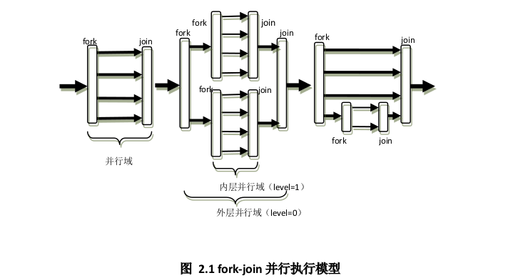

基本使用
前言
OpenMP 是基于共享内存模式的一种并行编程模型, 使用十分方便, 只需要串行程序中加入OpenMP预处理指令, 就可以实现串行程序的并行化. 这里主要进行一些学习记录, 使用的书籍为: Using OpenMP: Portable Shared Memory Parallel Programming 和OpenMP编译原理及实现技术
执行模式
OpenMP编程模型是以线程为基础的, OpenMP 执行模式采用fork-join的方式, 其中fork创建新线程或者唤醒已有的线程, join将多个线程合并. 在程序执行的时候, 只有主线程在运行, 当遇到需要并行计算的区域, 会派生出线程来并行执行, 在并行执行的时候, 主线程和派生线程共同工作, 在并行代码结束后, 派生线程退出或者挂起, 不再工作, 控制流程回到单独的线程中下. 下图说明了fork-join模型的执行流程

HelloWorld
#include <stdio.h>
#include <stdlib.h>
#include <omp.h>
int main() {
#pragma omp parallel
{
printf("The parallel region is executed by thread %d\n",
omp_get_thread_num());
if ( omp_get_thread_num() == 2 ) {
printf(" Thread %d does things differently\n", omp_get_thread_num());
}
}
return 0;
}
然后使用gcc编译程序, 为了使用OpenMP需要加上-fopenmp选项
gcc -fopenmp helloworld.c -o helloworld
下面是执行结果
The parallel region is executed by thread 2
Thread 2 does things differently
The parallel region is executed by thread 1
The parallel region is executed by thread 3
The parallel region is executed by thread 0
在上面的代码中, 程序开了四个线程, 其编号分别为0-3, 线程之间的执行是没有顺序的, 当下次再执行上述代码输出的结果可能就会不一样. 在上面的代码中, 我们并没有显式的指定线程的数量, OpenMP会根据下面的规则确定线程数量:
- num_threads的设置
- omp_set_num_threads()库函数的设置
- OMP_NUM_THREADS环境变量的设置
- 编译器默认实现（一般而言，默认实现的是总线程数等于处理器的核心数）
上面规则的优先级是依次递减的. 如果1 2 3 都没有指定, 那么就会使用规则4
参考文章
OpenMP Tutorial学习笔记(4)OpenMP指令之同步构造（Parallel）
OpenMP学习笔记：基本概念